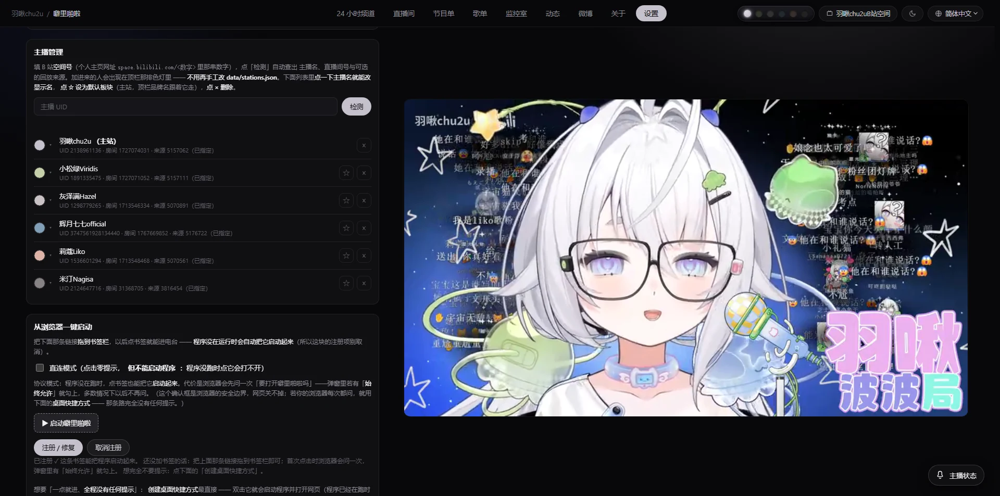
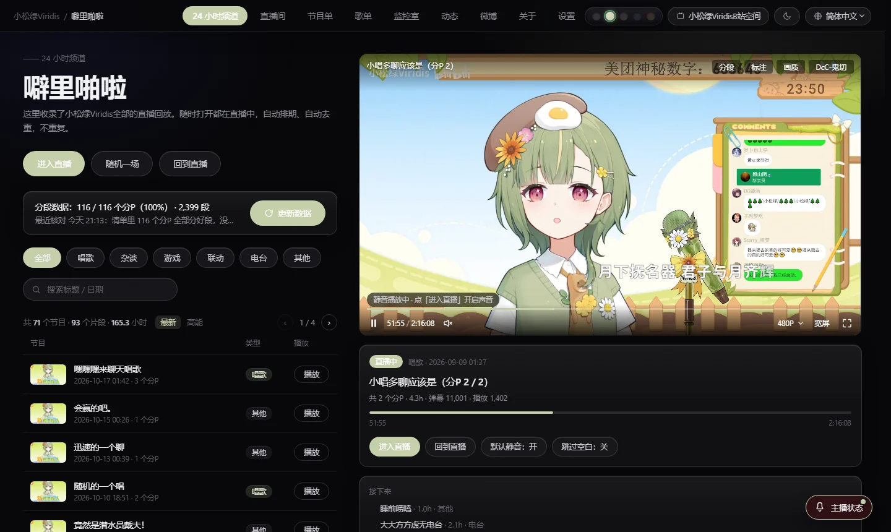
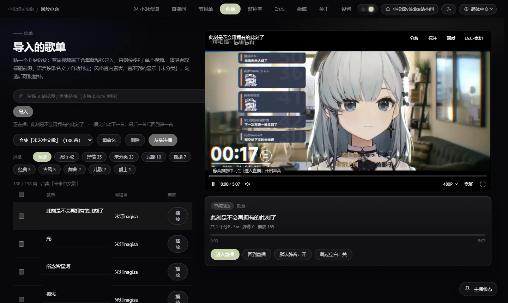
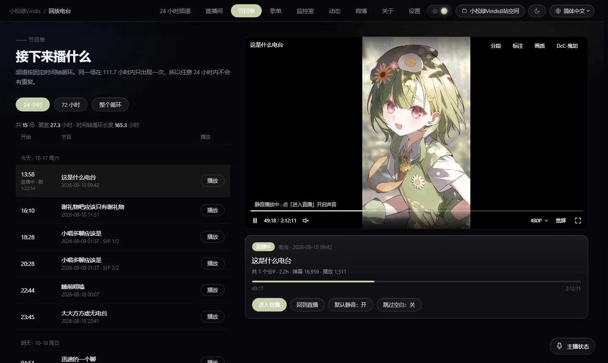
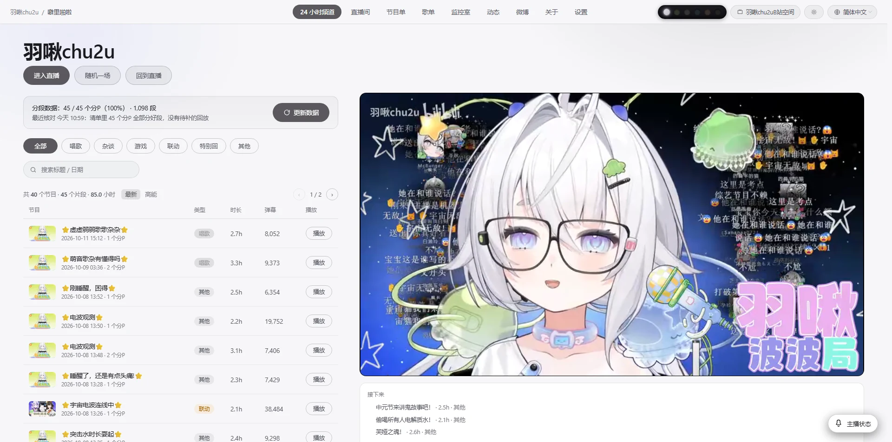

24 小时自动排期
按分段时长把回放铺满整条时间轴，循环播出且不重复。打开页面时，播放器总在「正在播出」的位置。
拉取任意 B 站主播的直播回放，按分段长度自动排期成一条永不结束的时间轴。弹幕随片对齐、多主播独立频道，全部在本机运行。



FEATURES
不是把录像按顺序放完，而是把回放当成一条持续播出的节目单来编排。
按分段时长把回放铺满整条时间轴，循环播出且不重复。打开页面时，播放器总在「正在播出」的位置。
按时间轴对齐还原原始弹幕，轮播、屏蔽词、发送框都在。登录态只存在本机，不经过任何服务器。
识别多 P 结构与静音间隙，把一晚上的直播切成上百段，跳转、抽签、插播都以段为单位。
每位主播一个独立频道、一套取自主站封面的配色，顶部一键切换，互不干扰。
从合集或收藏夹导入 B 站歌单并自动按风格归类；节目单里的歌回、杂谈、游戏、联动标签也可一键筛选。
接口与媒体流全部由本机服务代取，服务只监听 127.0.0.1，不向外部上报任何使用数据。
SCREENSHOTS
以下均为本机运行时的实拍，未做视觉修饰。


FAQ
还有疑问，可以在仓库的 Issues 里提问。
弹幕与部分清晰度的流需要登录态。你可以在设置页粘贴 Cookie 或扫码登录，凭据只写入本机数据目录，不会上传到任何地方。
不会。服务只监听 127.0.0.1，所有接口请求与媒体流都由本机进程代取。卸载时删除数据目录即可清理干净。
首次需要拉取主播的节目单与分 P 详情，并生成分段索引，通常几十秒。之后读取本地缓存，打开即可播放。
打包版提供 Windows 10 / 11 x64。macOS 与 Linux 目前需要用源码运行（依赖 Python 3.11+），尚未提供预编译包。
所有回放内容版权归对应 UP 主与平台所有。本项目只是把公开可访问的回放重新编排播放，不存储、不分发视频文件。